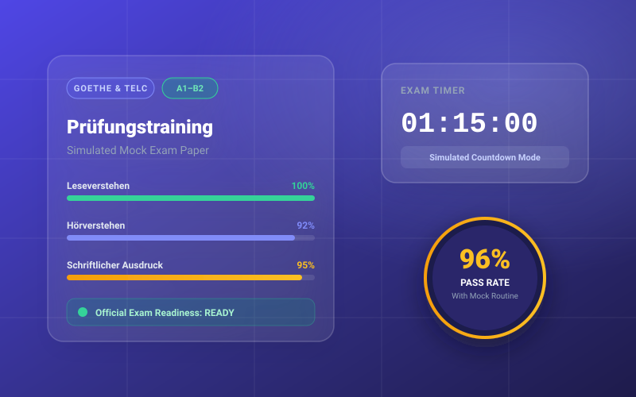

Featured Guide
Exam Tips
A1–B2
Why Practice & Mock Exams Matter Before Your German Exam
Passive studying alone won't prepare you for Goethe or telc exam day. Discover why timed mock exams, simulated pressure, and instant feedback are the keys to passing on your first attempt.
Read Full Guide